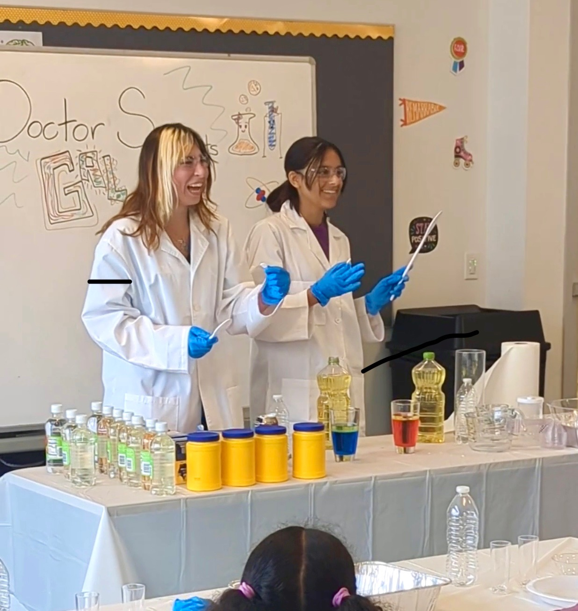
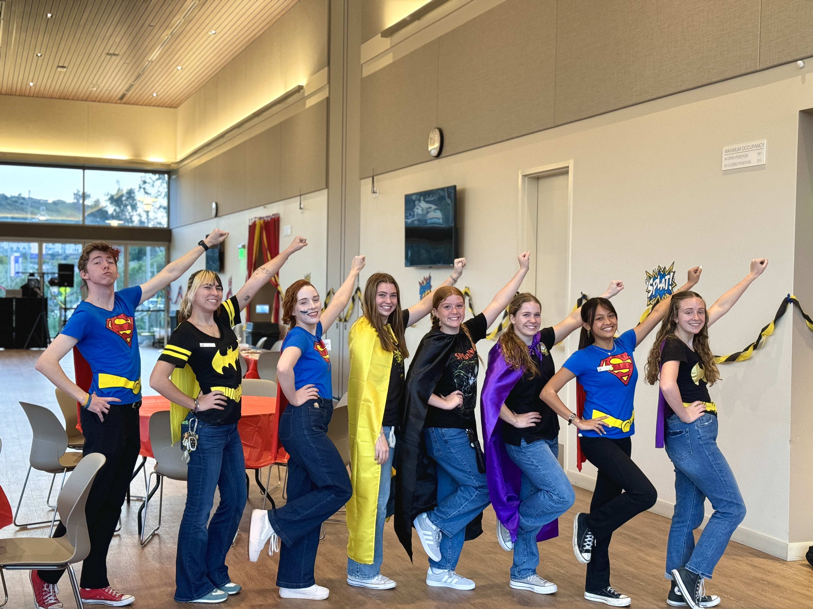
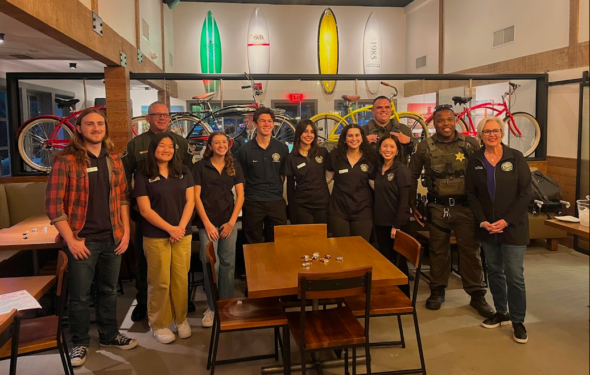
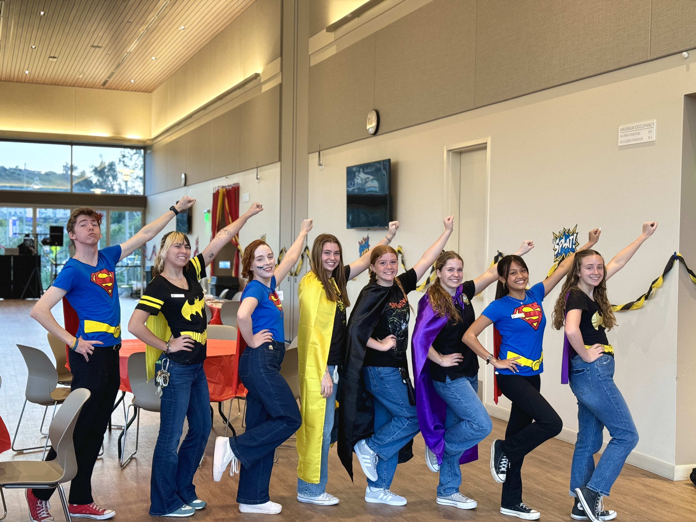
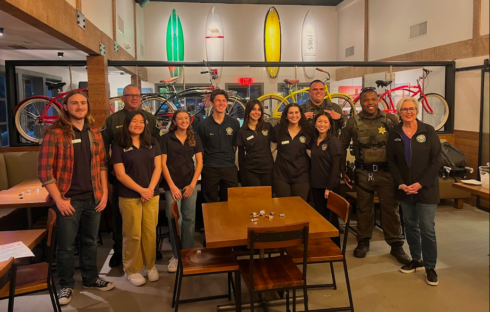

Bella Leibovitz
I was born on a rainy Tuesday in February in the year of our Lord 2002. From that moment on I had to learn everything from scratch. I hadn't remembered a thing from my past life! I couldn't even hold my head up or code a rocket launch (I was a NASA engineer in the past life). As I learned everything anew, I realized learning is just half the fun. Teaching was where it. was. at. I decided when I was in 3rd grade I wanted to be an Elementary School teacher. The trial and error began at that point. As it turns out, people are incredibly adverse to being commanded on what to do, which is what teachers do. Or so I thought! Interestingly, teaching is much more convoluted than spitting information aimlessly at people. Unfortunate, as that is my dominant skill. I’ve learned through my years of nannying and camp counseling that younglings respond best when approached with kindness, understanding, and patience. Again, traits I do not naturally possess. Nevertheless I continued on with this noble pursuit and it has landed me alllllllllllll the way over here! Today! Now!
I attend the University of California Riverside where I study Education with a double major in Developmental Psychology. Once I graduate, I think I am going to go and be the President of the United States. It seems very simple, and I heard it makes pretty good money! For the four year term, I’m going to scream (not any words, just like AAAAA) at everyone in the Supreme Court and in Congress until I don’t have a voice. I will also immediately kick Senator Palpatine off the Senate, as I really do not trust him and his intentions. He seems very comfortable with Federation control and, though an unfounded theory, I feel he may be working with the Sith. Then, I will declare American Sign Language the national language. The last day of my presidency, I will declare war on every single country in the world. After that, I’d like to apply for the UTEACH program at CSU Long Beach for my teaching credential, and then I would ideally like to be a 3rd grade teacher. I’ll likely do that forever, as it is what I’m truly passionate about.
The main reason I want to be a teacher is to help and be a support for the kids who need somebody in their lives. As a kid who wasn’t very supported in schools, I want to be a reminder to the future generations that they are smart, capable, and worthy of success. Teaching is the best avenue in my opinion to truly make change in the world. After being president, which I will have tried, this is easily second best. The younglings are our future, and setting them off with a good foundation of morals and the Jedi Code will create well-adjusted, kind, and selfless adults, something our current world is in desperate need of. I have learned a great deal through my time here, and can’t wait to be in the classroom! As Yoda once said, “Always pass on what you have learned”.
Experience
Senior Recreation Leader
• Plan, execute and run summer camp programs for Elementary ages students in groups up to 35
• Research plan and run inclusive programming
• Connect with the whole of the community to better understand theri wants and needs and how we can make that show in our programs
After School Aid
• Responsible for planning activities and lesson plans to make learning interesting for students
• Help students one on one with topics they struggle in
• Help students connect with their peers and create support systems for themselves
Jedi Master
• Sit in and discuss current political issues in the Senate
• Conduct the Trials for Padawans and judge their performace
• Train and lead onboarding processes for new Jedi Knights and Masters
Education
UC Riverside
University of California Riverside
Portfolio





 